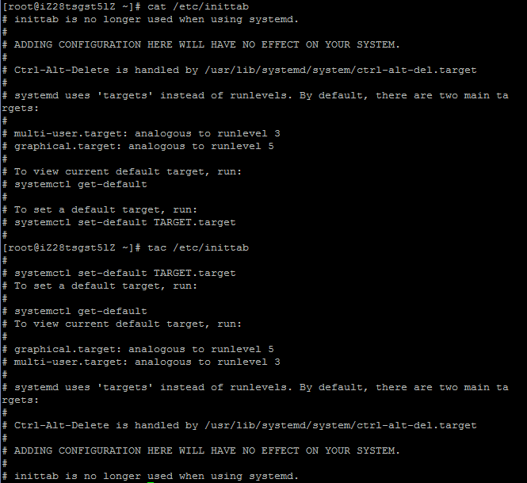
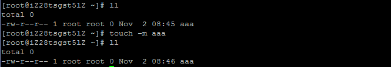

一、直接检视
1.cat，除了用文本编辑器nano和vim,用cat可以直接在终端显示文件内容
cat [-AbEnTv]
选项与参数：
-A ：相当于-vET，可列出一些特殊字符而不是空白而已
-b ：列出行号，仅针对非空白行做行号显示，空白行不标行号
-E ：将结尾的断行字节$显示出来
-n ：列印出行号，连同空白行也会有行号
-T ：将[tab]按键以^I显示出来
-v ：列出一些看不出来的特殊字符
2.tac
cat,tac,其实就是从最后一行开始显示。

3.添加行号打印：nl
二、翻页检视
1.more，在more界面下可以执行的操作:
空白键 (space)：代表向下翻一页
Enter ：代表向下翻一行
/字串 ：代表在这个显示的内容当中，向下搜寻"字串"
f ：立刻显示出档名以及目前显示的行数
q ：立刻退出，不再显示该文件内容
b 或 [ctrl]-b：往回翻页，不过该操作只对文件有用，对管道无用
2.less，在less界面下可以执行的操作:
空白键 ：向下翻动一页
[pagedown]：向下翻动一页
[pageup] ：向上翻动一页
/字串 ：向下搜寻"字串"的功能
?字串 ：向上搜寻"字串"的功能
n ：重复前一个搜寻(与/或?有关)
N ：反向的重复前一个搜寻(与/或?有关)
q ：离开less
三、数据撷取
1.head:取出前面几行
head [-n number] 文件:取出前面n行,默认取10
head [-n -number] 文件:除最后n行,其他取出
2.tail:取出后面几行
tail [-n number] 文件:取出后面n行,默认取10
tail [-n +number] 文件:取出n行后面的
四、非纯文字
od [-t TYPE] 文件
选项或参数：
-t ：后面可以接各种『类型 (TYPE)』的输出
例如：
a ：利用默认的字节来输出；
c ：使用 ASCII 字节来输出
d[size] ：利用十进位(decimal)来输出数据，每个整数占用size bytes
f[size] ：利用浮点数值(floating)来输出数据，每个数占用size bytes
o[size] ：利用八进位(octal)来输出数据，每个整数占用size bytes
x[size] ：利用十六进位(hexadecimal)来输出数据，每个整数占用size bytes
五、建立文件
先来说说Linux文档的三个时间
modification time (mtime)：
当该文件的内容数据变更时，就会更新这个时间，内容数据指的是文件的内容，而不是文件的属性或权限
status time (ctime)：
当该文件的状态(status)改变时，就会更新这个时间，例如权限与属性
access time (atime)：
当文件的内容被取用时，就会更新这个读取时间(access)，比如用cat去读取文件内容
touch [-acdmt] 文件
选项与参数：
-a ：仅修订access time
-c ：仅修改文件的时间，若该文件不存在则不创建新文件
-d ：后面可以接欲修订的日期而不用目前的日期，也可以使用--date="日期或时间"
-m ：仅修改mtime
-t ：后面可以接欲修订的时间而不用目前的时间，格式为[YYMMDDhhmm]
所以touch除了用来建立新文件，还可以用来修改这三个time
